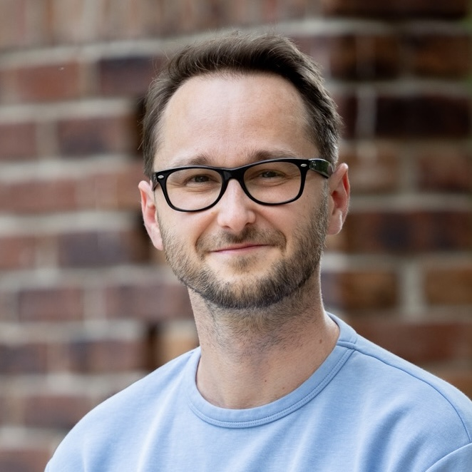

Poslanec mestskej časti Juh a druhý viceprimátor mesta Trenčín.
Venujem sa práci pre mesto, aktívne podporujem investície, rozvoj infraštruktúry, bezpečnosť a kvalitné životné prostredie. Moje priority sú aj transparentnosť, otvorenosť a spolupráca s ľuďmi v meste.
Navštevoval som francúzske bilingválne Gymnázium Ľ. Štúra v Trenčíne a neskôr City University of Seattle v Trenčíne. Prax a práce na projektoch som získal v rôznych oblastiach, od médií až po oblasť finančných technológií a komunikácie.
Od roku 2010 som poslancom pre mestskú časť Juh a od roku 2017 aj zástupcom primátora mesta Trenčín.
V práci sa venujem najmä otázkam mestského rozvoja, participácie, verejného priestoru, mobility a podpore mladých ľudí. Snažím sa, aby sa rozhodnutia robili otvorene a s ohľadom na obyčajných ľudí.
Zaujímam sa o šport, fotografovanie, dopravu a urbanizmus. Mám radišiu jednoduchý a priaznivý prístup k riešeniu problémov, ale zároveň aj ambíciu k dlhodobým projektom, ktoré menia mesto k lepšiemu.